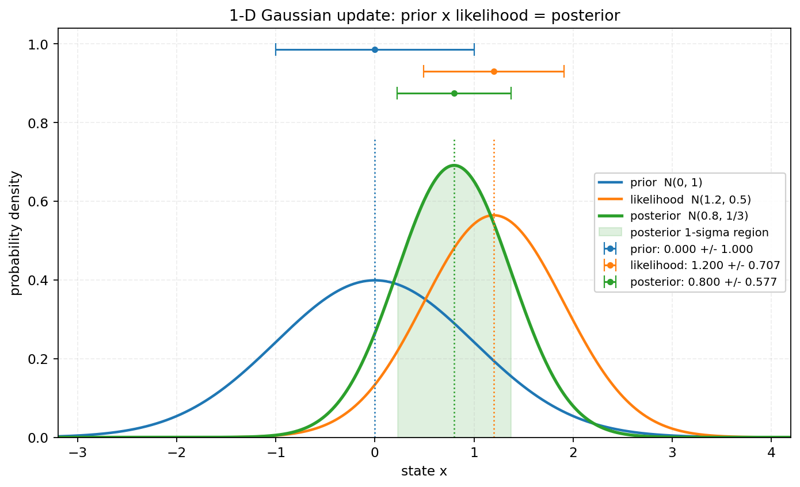
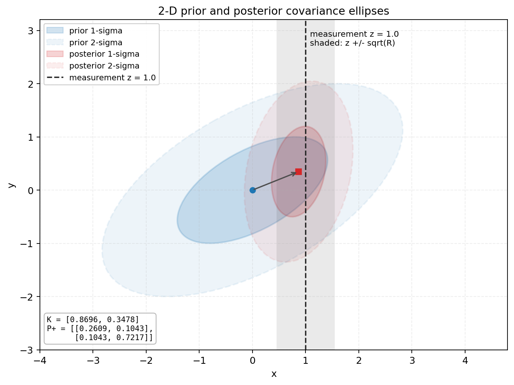

Lesson 0001 · 基础线
这一节只解决一件事：给你一个先验、一个观测，你能手算出后验，并说清 P/F/Q/H/R/K 各自在做什么。
target.cpp / Tracker.cpp 里的 K 对上号。
先认字母，再看数字。这一段是一维的：x、P 都只是一个数；到第 3 节才会变成向量和矩阵。
| 符号 | 怎么读 | 在这段里是什么 |
|---|---|---|
x | x | 目标的位置（状态） |
x⁻ | x 减 | 看到观测之前的预测值（先验） |
μ⁻, μ⁺ | mu 减 / mu 加 | 先验 / 后验的均值 |
P⁻, P⁺ | P 减 / P 加 | 先验 / 后验的方差（不确定性） |
z | z | 观测值（传感器这次量到多少） |
R | R | 观测噪声方差（传感器有多不准） |
K | K | 卡尔曼增益（给观测的权重） |
N(μ, P) | 正态 / 高斯 | 均值 μ、方差 P 的钟形分布 |
~ | 服从 | x⁻ ~ N(0,1) 读作“x⁻ 服从均值 0、方差 1 的正态分布” |
“先验”就是看观测之前，“后验”就是看完观测之后。下面用一组具体数字走一遍。
假设你对一个静止目标的位置有一个先验：
x⁻ ~ N(0, 1) 预测：均值 0，方差 1 z = 1.2 观测：目标在 1.2 R = 0.5 观测噪声方差（传感器不太准）
直觉上，后验应该在 0 和 1.2 之间，但更靠近观测，因为观测的方差 0.5 比先验的 1 小。KF 给出的权重是：
K = P⁻ / (P⁻ + R) = 1 / (1 + 0.5) = 0.6667 μ⁺ = μ⁻ + K (z - μ⁻) = 0 + 0.6667 × 1.2 = 0.8 P⁺ = (1 - K) P⁻ = 0.3333 × 1 = 0.3333
把数字换成字母，就是 KF 的三个通式：
K = P⁻ / (P⁻ + R) μ⁺ = μ⁻ + K (z − μ⁻) P⁺ = (1 − K) P⁻
贝叶斯公式：
p(x | z) = p(z | x) · p(x) / p(z)
p(x)：先验，看观测之前对 x 的判断；p(z | x)：似然，如果 x 是真的，观测到 z 的可能性；p(x | z)：后验，看完观测之后对 x 的判断；p(z)：z 的概率，把所有可能的 x 都考虑进去后，观测到 z 的总概率。观测模型是 z = x + v，v ~ N(0, R)。当 x 已知时，z 就是“x 加上一个均值为 0、方差为 R 的噪声”，所以 z 服从均值为 x、方差为 R 的正态分布：
p(z | x) = 1/√(2πR) · exp[ −(z − x)² / (2R) ]
先验模型设为均值为 μ⁻、方差为 P⁻ 的正态分布：
p(x) = 1/√(2πP⁻) · exp[ −(x − μ⁻)² / (2P⁻) ]
p(z) 是“不管 x 是多少，观测到 z 的总概率”。要把每个可能的 x 下的 p(z | x)，按 x 的先验概率 p(x) 加权加起来：
p(z) = ∫ p(z | x) · p(x) dx （离散时是 Σ_x p(z | x) · p(x)）
这里 x 已经被积分（或求和）掉了，所以 p(z) 里没有 x。对一次已经发生的观测 z 来说，它就是一个固定的数；它的作用是让后验 p(x | z) 对所有 x 加起来等于 1。因此配平方时可以先把它放一边，最后再归一化。
把先验和似然代进贝叶斯公式：
p(x | z) = (1/p(z)) · [1/√(2πP⁻) e^{−(x−μ⁻)²/(2P⁻)}]
· [1/√(2πR) e^{−(z−x)²/(2R)}]
前面的 1/p(z) 和两个 1/√(2π…) 都与 x 无关，配平方时只看指数。把指数里的 x² 和 x 的系数整理出来：
−1/2 [ (x − μ⁻)²/P⁻ + (z − x)²/R ] = −1/2 [ (1/P⁻ + 1/R)x² − 2(μ⁻/P⁻ + z/R)x + 常数 ]
后验 N(μ⁺, P⁺) 的指数是 −1/2 [ x²/P⁺ − 2(μ⁺/P⁺)x + 常数 ]。比较系数：
1/P⁺ = 1/P⁻ + 1/R μ⁺/P⁺ = μ⁻/P⁻ + z/R
第一式解出 P⁺；第二式两边乘 P⁺，整理成“先验均值 + 权重 ×（观测 − 先验）”：
P⁺ = P⁻R/(P⁻ + R) K = P⁻/(P⁻ + R) μ⁺ = μ⁻ + K(z − μ⁻) P⁺ = (1 − K)P⁻
直观上：后验精度 = 先验精度 + 观测精度（精度 = 1/方差）；后验均值是按精度加权的平均。
回到刚才的数字：后验是 N(0.8, 0.333)。注意两件事：
K 是“观测的权重”。R 越小，K 越接近 1，越信观测。K=0.666666666667，μ⁺=0.800000000000，P⁺=0.333333333333；
与“两个高斯相乘”的解析结果误差 5.6e-17。见 verify/verify_kf.py。

K 决定。图由 verify/verify_kf.py 生成。三个公式的直观读法：
K：观测的权重。R 小（观测准）→ K→1；P⁻ 小（预测准）→ K→0。μ⁺：先验均值 + K × 残差。如果 z = μ⁻，残差为 0，后验不动。P⁺：精度相加的结果，所以一定比 P⁻ 和 R 都小（更确定）。一句话：K 决定信谁，μ⁺ 决定往哪走，P⁺ 决定还剩多少不确定。
一维里我们把均值叫 μ；多维里直接把状态估计叫 x，它代表均值。所以 x⁻ ↔ μ⁻，x⁺ ↔ μ⁺。矩阵公式只是把一维的每个“数”换成一排数：
预测： x⁻ = F x P⁻ = F P Fᵀ + Q 创新： y = z - H x⁻ S = H P⁻ Hᵀ + R 增益： K = P⁻ Hᵀ S⁻¹ 更新： x⁺ = x⁻ + K y P⁺ = (I-KH)P⁻(I-KH)ᵀ + KRKᵀ
| 符号 | 维度 | 含义 | 一维时是什么 |
|---|---|---|---|
x | n×1 | 状态估计（车心、速度、yaw、ω、r…） | 一个数，就是 μ |
P | n×n | 状态的不确定性（协方差） | 方差 P |
F | n×n | 状态转移 | 一个数；静态例子 F=1 |
Q | n×n | 过程噪声协方差 | 方差 Q；静态例子 Q=0 |
H | m×n | 状态到观测的映射 | 一个数；例子 z=x+v 里 H=1 |
R | m×m | 观测噪声协方差 | 方差 R |
y | m×1 | 观测残差（创新） | z−μ⁻ |
S | m×m | 创新协方差 | P⁻+R |
K | n×m | 增益 | 一个数 P⁻/(P⁻+R) |
I | n×n | 单位矩阵（矩阵里的 1） | 1 |
所以读矩阵公式时，可以直接换成一维式子：
S = H P⁻ Hᵀ + R → P⁻ + R；K = P⁻ Hᵀ S⁻¹ → P⁻/(P⁻+R)；x⁺ = x⁻ + K(z − H x⁻) → μ⁺ = μ⁻ + K(z − μ⁻)；P⁺ 的更新：一维是 (1−K)P⁻；多维写成 (I−KH)P⁻(I−KH)ᵀ + KRKᵀ，只是把 1 换成 I、把 K 换成 KH。Q 大 → 更信观测，R 大 → 更信预测；第 4 节会展开。
取状态 x=[位置; 速度]，先验均值和协方差为：
x⁻ = [0; 0] P⁻ = [[2.0, 0.8],
[0.8, 1.0]]
观测模型是 H=[1, 0]，R=0.3，这次观测 z=1.0。
H 是 m×n，作用是把 n 维状态变成 m 维观测。这个例子里 n=2（位置、速度两个状态），m=1（观测只有一个数），所以 H 是 1×2：
H x = [1, 0] · [位置; 速度] = 位置
H 的第一列 1 取位置，第二列 0 丢掉速度。观测 z 里只有位置，速度没有直接被测到；y = z − H x⁻ 比较的是“观测位置”和“预测位置”。
维度也跟着定下来：P⁻ 是 2×2，S 是 1×1，K 是 2×1。
① 残差（观测减预测）：
y = z − H x⁻ = 1.0 − 0 = 1.0
② 创新协方差（预测的不确定性投影到观测空间，再加观测噪声）：
S = H P⁻ Hᵀ + R = 2.0 + 0.3 = 2.3
③ 增益：
K = P⁻ Hᵀ S⁻¹ = [2.0; 0.8] / 2.3 = [0.8696; 0.3478]
④ 状态更新：
x⁺ = x⁻ + K y = [0; 0] + [0.8696; 0.3478] × 1.0 = [0.8696; 0.3478]
位置从 0 改到 0.87；速度也从 0 改到 0.35，因为 P⁻ 里位置和速度的协方差 0.8 不为 0。
⑤ 协方差更新：
K H = [[0.8696, 0], [0.3478, 0]]
I − K H = [[1 − 0.8696, 0], [−0.3478, 1]]
= [[0.1304, 0], [−0.3478, 1]]
P⁺ = (I − K H) P⁻
= [[0.2609, 0.1043],
[0.1043, 0.7217]]
（这里用等价的 (I−KH)P⁻ 手算；上面的矩阵形式只是它的数值稳定写法，结果相同。）
位置方差 2.0 → 0.26，速度方差 1.0 → 0.72，协方差 0.8 → 0.10。观测位置把两个方向的不确定性都压小了。
0.8696 = 2/(2+0.3)，就是一维的 P⁻/(P⁻+R)；0.3478 = 0.8/2.3，来自位置和速度的协方差。verify/verify_kf.py 的 two_d() 数值一致。

P 的特征值/特征向量决定；KF 更新不是简单“缩小”，而是沿着观测能约束的方向缩小。图由 verify/verify_kf.py 生成。E[(x−μ)(x−μ)ᵀ]”“为什么它是椭圆”“为什么传播是 A P Aᵀ”还不熟，
先读这一页：协方差：定义、矩阵、椭圆与传播。
它只用高中概率（期望、方差、加权平均），把 P/Q/R 逐个拆开。
一维 CV 模型：
p⁺ = p + v dt v⁺ = v F = [[1, dt], [0, 1]] Q = σ_a² [[dt⁴/4, dt³/2], [dt³/2, dt²]]
P⁻ = F P Fᵀ + Q：F P Fᵀ 是把原来的不确定性“推着走”，+Q 是因为模型不完美（目标可能加速），所以预测后不确定性一定增加。没有 Q，滤波器会越来越“自信”，最后完全不理会观测——这是实际调参中最常见的翻车方式。
Q 是过程噪声，所以越小越好。” 错。Q 太小 → P 越来越小 → K 越来越小 → 滤波器“自闭”，目标机动时直接跟丢。Q 是给模型的不完美留的余地。
三套代码的更新核心是同一行：
K = P * H.transpose() * (H * P * H.transpose() + R).inverse();
tools/extended_kalman_filter.cpp，H 是解析雅可比 J_ypd · J_geom；3rdparty/KalmanHyLib/error_state_extended_kalman_filter.hpp，P 是误差状态协方差，H 在误差坐标里数值求；mathutils/IESEKF_Double_Armor.hpp，K 在外层迭代里反复算。它们的区别不是“KF 公式不同”，而是 x 的参数化、H 的求法、Q/R 的建模不同。先把这一节的 K 看懂，后面只是换坐标系。
1. 先验 N(0,1)，观测 z=1.2，R=0.5，后验均值是？
2. 如果把 R 调得非常大，卡尔曼增益会怎样？
3. 预测步骤 P⁻ = F P Fᵀ + Q 中，+Q 的作用是？
H 从“一个数”变成“投影函数的雅可比”。